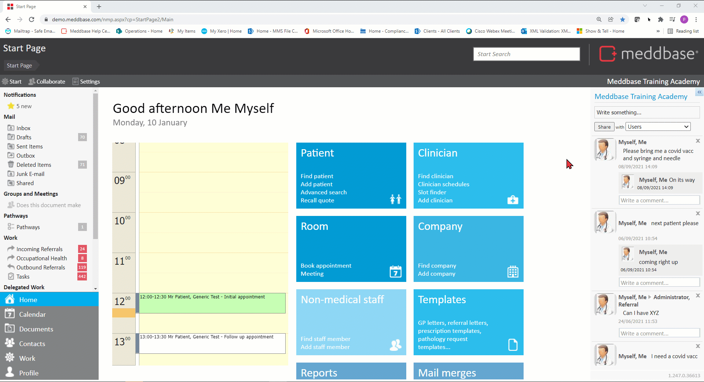
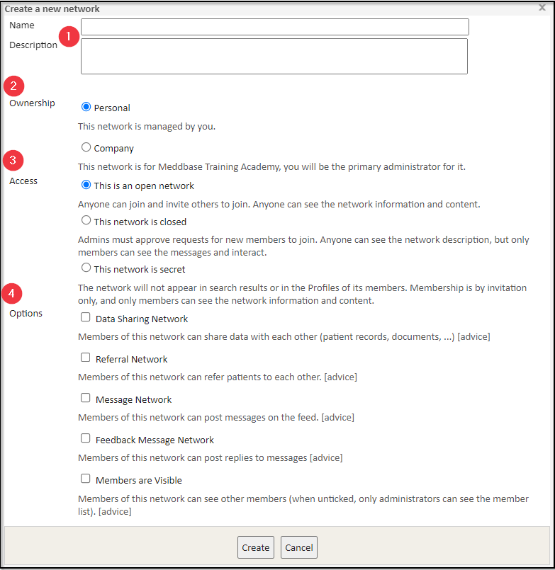
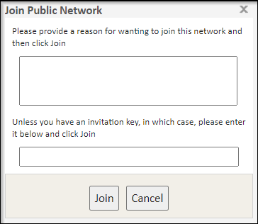
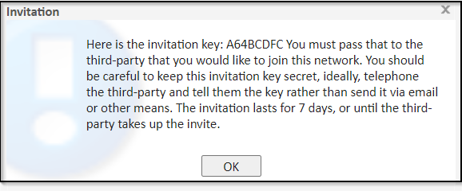

Networks can be used to setup access rights between multiple chambers within Meddbase, message multiple chambers, or to refer patients from one chamber to another.
The below article describes an Advanced feature of Meddbase. Please ensure you've considered the information governance and data privacy implications of enabling this feature before proceeding.
Meddbase chambers are hosted on different databases (systems) and some database restrictions apply for networks.
What is the purpose of the article?
This article will walk you through the following aspects of Meddbase Networks:
Creating a Network
Network Ownership, Access Types and Options
Joining a Network
Leaving a Network
Creating a Network
To setup a new network follow the steps below:-
From the Start Page navigate to Networks
Click Create a New Network

You will then be presented with the Network Settings dialog window.
Network Ownership, Access Types and Options
The Network Settings dialog window presents the below configuration options:-

1. Name and Description for your network
These are the details that will appear to other users who are able to view the network.
2. Network Ownership type
Personal - only you will be able to see the network and administrate it.
Company - the network will be visible to all users in your chamber and you will be the primary administrator of it.
As an Administrator of a network, you have the option to change the network settings, remove members and close the network.
3. Network Access type
Open - anyone can join and invite others to join. Anyone can see the network information and content.
Closed - admins must approve requests for new members to join. Anyone can see the network description, but only members can see the messages and interact.
Secret - the network will not appear in search results or in the Profiles of its members. Membership is by invitation only, and only members can see the network information and content.
4. Network Options:
Data Sharing Network - being part of a data sharing network allows you to grant users or roles from participating chambers access to your data. This is typically used when organisations with multiple chambers want to share data, such as patients and clinician schedules, across chambers. If this option is ticked, users and role groups of participating chambers can be added to security policies in your chamber, and vice-versa. Within the security policy section, you can selectively grant users permissions to the data in your chamber. A Data Sharing Network only works within the same database (system).
Referral Network - member chambers of this network can refer patients to each other as companies, or to each other's clinicians. A Referral Network can work across different databases (systems) with specific config.
Message Network - member chambers of this network can post messages on the feed.
Feedback Message Network - member chambers of this network can post replies to messages posted on the feed.
Members are Visible - member chambers of this network can see other members (when unticked, only administrators can see the member list).
Click Create and your network will be created.
Joining a Network
You can join a network as an Individual or as a Company (chamber). Furthermore, you can join a Public or a Private network.
To join a Public Network:
From the Start Page, navigate to Networks
Click on a network you'd like to join from the list of Public Networks on the left hand pane
*Click either:
Join - only you will be a member of the network or
Company join - all users in your chamber will be part of the network.

*Depending on the Network settings, you may be prompted to provide a reason for wanting to join the network or enter an invitation key. The Network Administrator can approve your request to join the network or provide you with the invitation key.
To join a Private Network:
From the Start Page, navigate to Networks
*Click either of the below options on the upper action bar:
Join a Private Network (Individual) or
Join a Private Network (Company)
*In either case you will be prompted to enter an invitation key. The Network Administrator can provide you with the invitation key.
To obtain an invitation key for a Network you are an Administrator of:-
From the Start Page, navigate to Networks
In the Member of section, click on the network you wish to invite others to
Click Invite and confirm
You will be presented with a pop-up containing the invitation key and some instructions as to how best to share the key and expiry timeframe.

Leaving a Network
To leave a Network:
From the Start Page navigate to Networks
In the Member of section, click on the network you wish to leave
Click either:
Leave - only you will leave the network* or
Company leave - you will leave this network with your company and all users associated with your company*.
*If a member is the only network administrator, they can not be removed